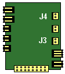
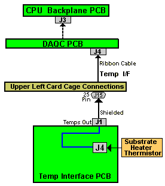

Troubleshooting Substrate Temperature Issues
Purpose
This procedure provides instructions for troubleshooting temperature issues in the substrate system.
When To Perform
Perform this procedure when troubleshooting substrate temperature Issues.
Substrate Duty Cycle Guideline
The substrate duty cycle guideline: 0.07–0.24
Note: This guideline provides a reference for troubleshooting purposes. If the duty cycle is higher than the guideline, then consider troubleshooting:
- Substrate heater insulation (verify its presence and correct wrapping).
- Substrate pump heater.
- Heater connections.
- Lab environment (excessive cold could increase the duty cycle).
Temperature Errors
Select
, and check the substrate temperature and duty cycle displayed in the window.
Note: The normal substrate temperature is 37.4 ±0.5 °C (the range is 36.9 °C to 37.9 °C).
| Analog Data Screen - Substrate Temperature (°C) | Analog Data Screen - Substrate Duty Cycle | Possible Causes | Troubleshooting Procedure |
|---|---|---|---|
| -20 or lower
or +50 or higher |
0.0 | Thermistor or thermistor circuit:
|
Refer to Troubleshooting Procedure - Thermistor in this document. |
| Erratic temperature readings | NA | Intermittent thermistor short to ground or the chassis.
Note: The reference voltage (center pin on the thermistor connector) for all the thermistors comes from the DAQC PCB. It is possible for one bad or shorted thermistor to affect the reference voltage used by all the thermistors.
|
Refer to Erratic Temperature in the Instrument: Troubleshoot General Temperature procedure. |
| approximately 26 (ambient) | approximately 1.00 | Heater or heater circuit:
|
Refer to Troubleshooting Procedure - Heater in this document. |
Troubleshooting Procedure - Thermistor
- Remove the cover from the Temperature Interface PCB.
Note: The Interface PCB is located on the Base Plate to the right of Reagent Pipettor 4.
- Determine if the issue is the thermistor.
Note:
- Software may disable the heater when the thermistor is disconnected.
- Initializing the system will enable the heater if the temperature is near normal.
- Select .
- Observe the substrate temperature.
- Swap the substrate thermistor connector at J4 with the wash carousel thermistor connector at J3.

- Observe the temperatures on the Analog Data display.
- If the temperatures do not change places, the thermistor monitoring circuitry might be defective. Proceed to troubleshooting for that item. Otherwise continue to the next step.
- Select
and observe the substrate temperature. If the temperature is:
- greater than 50 °C, the issue is most likely a shorted thermistor. Replace the thermistor.
- less than -20 °C, the issue is most likely an open thermistor. Replace or repair the thermistor. If the open circuit is in the thermistor connector, it can be repaired.
- 26 °C (ambient), the issue is most likely a heater or power circuit problem. Check the heater and power circuits.
- inaccurate, the issue is most likely a defective thermistor. Check the temperature and the thermistor resistance.
- Disconnect J4 from the Temperature Sensor Interface PCB.
- Measure the resistance between pins 1 and 2 on the thermistor connector (black to red, or black to green wires).
- Measure the temperature of the thermistor area with a thermocouple. If a thermocouple is not available, then place the thermistor into a container of water and ice (0.0 °C). If the measured resistance is 32.65 K Ohm, then the thermistor is OK.
- Determine the expected resistance for the temperature. If the resistance does not match the temperature, then replace the thermistor.
- -22 °C = less than 108.9 K Ohm)
- 0.0 °C = less than 32.65 K Ohm)
- 4.0 °C = less than 26.68 K Ohms)
- 10.0 °C = less than 19.90 K Ohms)
- 25.0 °C = less than 10 K Ohms)
- 30.0 °C = less than 8.05 K Ohms)
- 36.0 °C = less than 6.26 K Ohms)
- 37.0 °C = less than 6.01 K Ohms)
Note: The resistance of a shorted thermistor is very low, less than 1 K Ohm.
- Attempt to identify the temperature measurement circuitry issue by first reseating these connectors:
- Interface PCB J1 to Upper Left Card Cage J15.
- Upper Left Card Cage J15 to DAQC PCB J4.
- DAQC PCB to Backplane J3.

- Troubleshoot the general temperature system.
Note: Refer to the Instrument: Troubleshoot General Temperature procedure.
Troubleshooting Procedure - Heater
- Initialize the instrument to relaunch the temperature control.
Note: Software can disable the heater when the thermistor is disconnected. Initialization relaunches the temperature control.
- Confirm that the heater cable is connected at J12 on the substrate interface board.
Note: A schematic of the test points and LEDs for the substrate interface board is located in the Drawing - PCB - Interface - Substrate document.
- Disconnect J12 and measure the heater resistance between pins 1 and 2 on the thermistor connector (black to red wires). If the resistance is outside the range of 60 ±6 Ohms, then replace the substrate pump.
- Confirm that there is 24 V DC power at TP8. If 24 V DC is not present, then verify:
- The cover open interlock switches (Upper Left, Upper Right, and SPU) are closed.
- The MCC power switch on the Power Distribution board is on.
- Verify the electrical connections. The substrate Interface PCB 24 V power routes from Power Distribution Module J2 to JP1 on the MCC backplane and then from J63 on the MCC backplane to J17 on the Substrate Interface PCB
- Confirm that there is a Pulse Width Modulation (PWM) signal at TP18.
- This signal appears as a pulsed 5 V DC signal.
- The D22 LED is a solid light when the PWM is on.
If the PWM signal is not present, then troubleshoot the signal pathway (cables, connections, and PCBs).- The duty cycle PWM signal that controls the temperature routes from J2 on the COMC card to J2 on the MCC Backplane and then from MCC Backplane J74 to J8 on the Substrate Interface PCB.
- If these steps do not resolve the issue, then contact the Technical Support group for your area for further troubleshooting assistance.